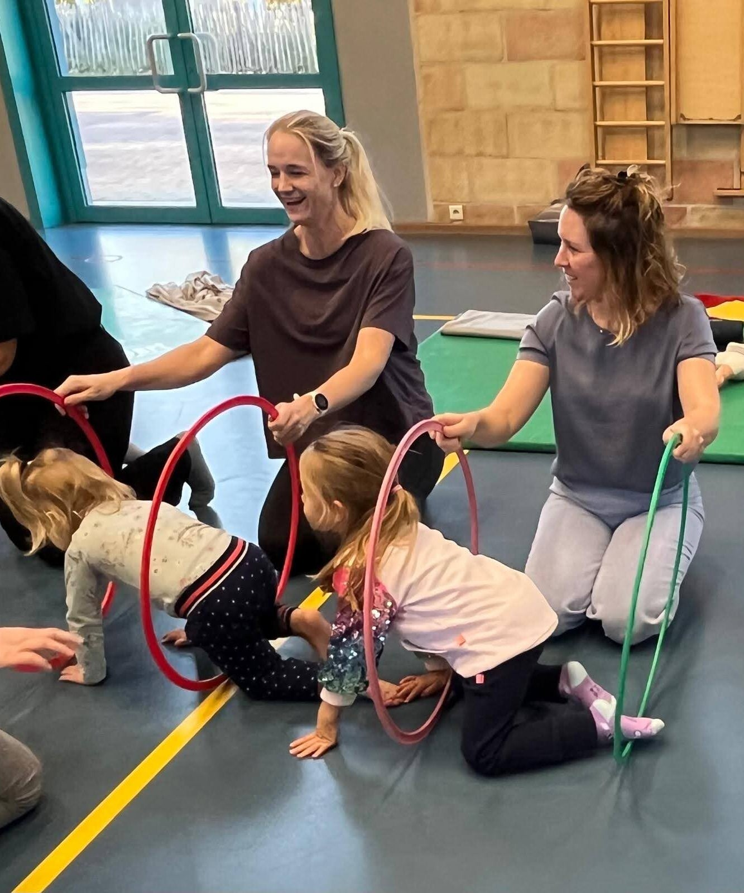
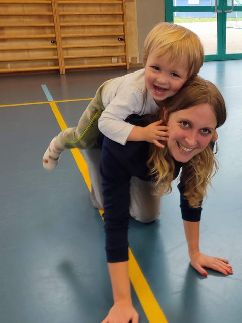
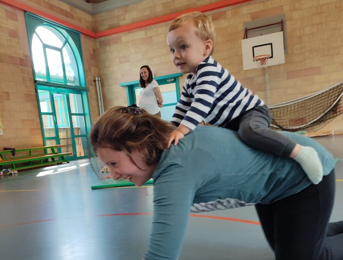
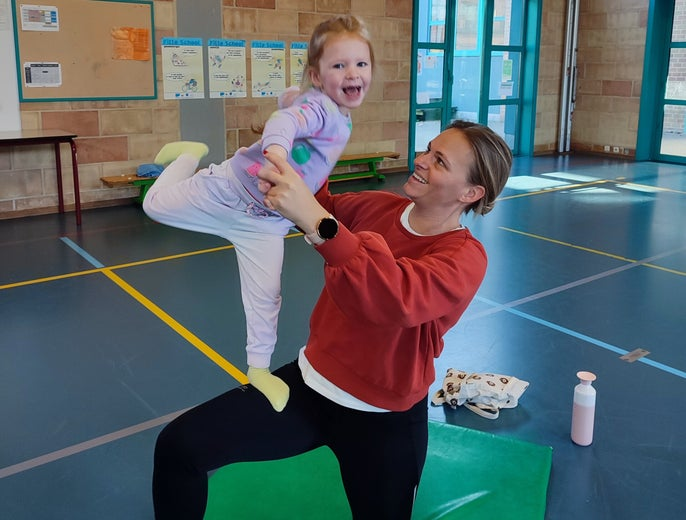
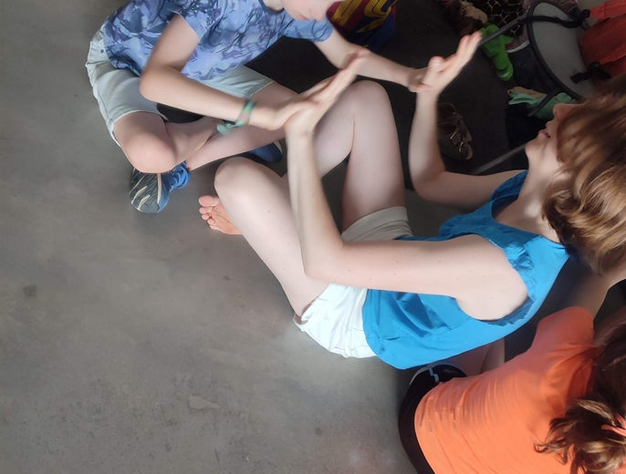

Speel & Verbind
Samen bewegen, spelen en dieper verbinden
Voor ouders en kinderen van 2 tot 12 jaar
“Een warm moment om samen volop te spelen, plezier te maken en te verbinden, terwijl ook jij als ouder even mag vertragen en ontspannen.”
Een speelse en verbindende workshop vol beweging, plezier en samenspel voor jou en je kind van 2 tot 12 jaar.
Hoe fijn is het om even alles wat moet aan de kant te leggen en onverdeelde aandacht te hebben voor je kind? Om samen te bewegen, te spelen, te lachen en gewoon te genieten van elkaar, zonder schermen of verwachtingen die jullie aandacht opeisen?
Tijdens Speel & Verbind nodig ik jou en je kind uit om samen op ontdekking te gaan. Via speelse bewegingsactiviteiten, geïnspireerd op de Sherborne bewegingspedagogiek, ontdekken jullie hoe fijn het is om samen te bewegen, elkaar aan te voelen en op een andere manier contact te maken.
Spel en beweging zijn niet alleen leuk, ze zijn ook belangrijk voor de ontwikkeling van je kind. Door samen te bewegen en te experimenteren, leert je kind het eigen lichaam beter kennen en groeit het vertrouwen om nieuwe dingen uit te proberen. Tegelijk krijgt jullie band de kans om te groeien door nabijheid, plezier en positieve ervaringen. Jij ontdekt hoe je kunt aansluiten bij de behoeften van je kind, terwijl je zelf opnieuw de ruimte krijgt om zorgeloos mee te spelen, te lachen en te genieten.
Speel & Verbind is er voor kinderen van 2 tot 12 jaar, waarbij elke leeftijdsgroep een eigen invulling krijgt. De activiteiten en begeleiding zijn afgestemd op de lichamelijke en emotionele ontwikkeling van je kind, zodat jullie allebei op jullie eigen manier kunnen deelnemen en beleven. We werken in kleine groepjes van maximaal 10 kinderen, met aandacht voor een warme, veilige sfeer en persoonlijke begeleiding.
Wat betekent Speel & Verbind voor de ontwikkeling van je kind?

In een wereld waarin alles vaak snel gaat en kinderen heel wat prikkels te verwerken krijgen, is het belangrijk om bewust momenten in te plannen waarop je samen kunt bewegen, spelen én tot rust kunt komen.
Tijdens Speel & Verbind wisselen we actieve bewegingsspelletjes af met rustigere momenten van nabijheid en ontspanning.
Ik stem de activiteiten af op de dynamiek van de groep en kijk naar wat de kinderen op dat moment nodig hebben.
Zo bouwen we vanuit beweging en spel geleidelijk aan meer rust en verbinding op.

Je kind leert zijn lichaam kennen en vertrouwen opbouwen
Door samen te rollen, te stoeien en te ontspannen groeit het vertrouwen. Je kind voelt zich gezien en geborgen in een warme omgeving.
Lichaamsbesef en ontspanning
Via de zachte Sherborne bewegingspedagogiek leert je kind eigen grenzen kennen, emoties reguleren en van actie naar rust te schakelen.
Kleine, intieme groepjes
We houden de groepen bewust klein met maximaal tien duo's. Zo is er altijd rust, ruimte en persoonlijke afstemming voor iedereen.
Kleine, intieme groepjes
We houden de groepen bewust klein met maximaal tien duo's. Zo is er altijd rust, ruimte en persoonlijke afstemming voor iedereen.
Lichaamsbesef en ontspanning
Via de zachte Sherborne bewegingspedagogiek leert je kind eigen grenzen kennen, emoties reguleren en van actie naar rust te schakelen.
De drie leeftijdsgroepen
Kies de groep die naadloos aansluit bij de ontwikkelingsfase van jouw kindje en beleef samen een verbindend moment vol rust en spel.
We werken telkens in een kleine groep van maximaal 10 ouder-kindduo’s, zodat er ruimte is voor persoonlijke begeleiding en een warme, veilige sfeer waarin jullie helemaal jezelf mogen zijn.
Peuters & kleuters (2-4 jaar)
€ 25 per duo

Tijdens deze workshop gaan jij en je kind samen rollen, klimmen, bewegen en spelen. Met speelse bewegingsopdrachten, geïnspireerd op de Sherborne bewegingspedagogiek, ontdekken jullie hoe jullie op elkaar kunnen afstemmen en inspelen op elkaars behoeften. Je kind leert het eigen lichaam beter kennen, krijgt de kans om emoties te uiten en bouwt stap voor stap aan zelfvertrouwen. Ondertussen krijg jij de ruimte om zelf mee te spelen, samen energie kwijt te raken en vooral zorgeloos te lachen en te genieten.
Tijdens deze workshop duiken we in de wereld van:
Beweging: samen rollen, klimmen en experimenteren met speelse bewegingsopdrachten.
Plezier: genieten van leuke spelletjes, rijmpjes en speelmateriaal.
Verbinding: jullie hechtingsband versterken, afstemmen op je kind zijn/haar behoeften en volledig aanwezig zijn.
We werken met twee leeftijdsgroepen:
- Groep 2: 2-jarigen (niet-schoolgaande kindjes)
- Groep 3: 2,5–4 jaar (schoolgaande kindjes)
Zo sluiten de activiteiten aan bij de leeftijd en ontwikkeling van je kind.
Duur: 1 uur
Locatie: Dilbeek
Kleuters & lagere school (5-7 jaar)
€ 35 per duo

Tijdens deze workshop ontdekken jij en je kind hoe fijn het is om samen te bewegen, te spelen en elkaar op een andere manier te ontmoeten. Met speelse bewegingsopdrachten, acrobatische oefeningen en samenspel gaan jullie experimenteren, elkaar uitdagen en op elkaar leren vertrouwen. Je kind krijgt de kans om zelfstandigheid en zelfvertrouwen te ontwikkelen, terwijl jullie als duo ontdekken hoe je elkaar kunt ondersteunen, volgen en aanvoelen.
Tijdens deze workshop duiken we samen in de wereld van:
Beweging & acrobatie: samen experimenteren, balanceren en nieuwe bewegingsmogelijkheden ontdekken.
Verbinding & vertrouwen: elkaar ondersteunen, op elkaar afstemmen en samen uitdagingen aangaan.
Plezier & ontdekken: lachen, spelen en genieten van spontane momenten.
Vertragen & ontspannen: na het bewegen bewust ruimte maken om tot rust te komen en samen te landen.
We werken afwisselend in duo's en met de groep. De activiteiten worden afgestemd op de kinderen en de dynamiek van de groep. Er hoeft niets gepresteerd te worden: jullie mogen ontdekken wat bij jullie past en vooral genieten van de tijd samen.
Duur: 1,5 uur
Locatie: Dilbeek
Opgroeiende kinderen (8-12 jaar)
€ 45 per duo

Hoe vaak maken jullie nog écht tijd voor elkaar? Tijdens Speel & Verbind nodig ik jou en je kind uit om even uit de dagelijkse drukte te stappen en samen te bewegen, te spelen en nieuwe dingen te ontdekken. Via speelse bewegingsactiviteiten, samenspel en uitdagende oefeningen krijgen jullie de kans om elkaar op een andere manier te ontmoeten, samen plezier te maken en jullie band te versterken.
Tijdens deze workshop duiken we samen in de wereld van:
Beweging & uitdaging: experimenteren met bewegingsactiviteiten, acrobatie en circomotoriek, waarbij jullie samen nieuwe dingen kunnen proberen.
Verbinding & vertrouwen: ontdekken hoe jullie op elkaar kunnen afstemmen, samenwerken en elkaar ondersteunen.
Plezier & samenspel: samen lachen, uitdagingen aangaan en genieten van onverwachte momenten.
Vertragen & ontspannen: bewust schakelen van actie naar rust met ontspannende oefeningen en ademhaling.
Geen enkele sessie ziet er precies hetzelfde uit. Ik laat me inspireren door de groep en door wat er op dat moment ontstaat. Soms gaan we volop in beweging, terwijl we op andere momenten bewust vertragen en ruimte maken om tot rust te komen. Jullie hoeven nergens goed in te zijn en er hoeft niets gepresteerd te worden. Er is ruimte om op jullie eigen manier deel te nemen en te ontdekken wat bij jullie past.
Duur: 2 uur
Locatie: Dilbeek